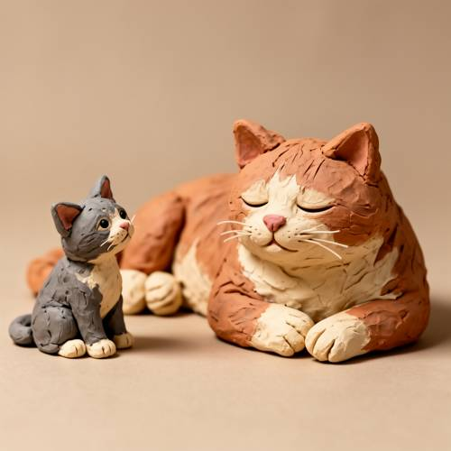
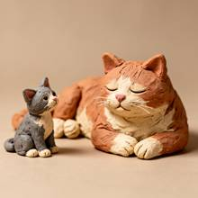

Relationship — A clay sculpture, a huge adult cat lying lazily, not far away a small
A clay sculpture, a huge adult cat lying lazily, not far away a small kitten is curiously staring at it.


Judge — Direct
- FAILRelationship - Comparison — The prompt starts with 'A clay sculpture,' which implies the entire scene described should be a single sculpture. The image shows a large clay sculpture of an adult cat, but the small kitten next to it is a real, live animal, not part of the clay sculpture. Therefore, the image does not accurately represent the subjects for comparison as implied by the prompt, which describes a single piece of artwork.
- PASSAction - Non-contact Interaction — The image depicts a small kitten sitting next to a large clay sculpture of a cat. The kitten's head and eyes are turned towards the sculpture, indicating that it is looking at it. This fulfills the requirement that the small kitten is staring at the large cat.
Judge — Continuum
- PASSRelationship - Comparison — The image displays two clay sculptures of cats against a plain background. One sculpture depicts a large, orange and white cat, while the other depicts a much smaller gray and white cat. The size difference between the two sculptures is significant, visually representing a 'huge adult cat' and a 'small kitten'.
- PASSAction - Non-contact Interaction — The small, gray and white clay kitten sculpture is positioned in a sitting pose with its head tilted upwards. Its eyes are painted on and are directed towards the larger, orange and white cat, visually depicting the act of 'staring at it'.
What the agent did
Thinking
We need answer user likely wants image generation. Need use tools. Need plan. Need generate image with flux2-dev per benchmark policy. We should call generate_image with prompt filled visual detail, no extra nonvisual. Need maybe aspect? User didn't specify. Default 1024x1024 maybe fine. Need inspect image result in tool output visually. We can generate then inspect by viewing inline output? We as assistant can see image returned. Need maybe use generate_image first. Need include model flux2-dev. Prompt: clay sculpture style, huge adult cat lying lazily, small kitten nearby curiously staring. Need specify both are clay sculptures? User says 'A clay sculpture, a huge adult cat...' Could mean scene as clay sculpture. Better prompt: "A handmade clay sculpture scene: a huge adult cat lying lazily on a woven mat, eyes half-closed, body relaxed; a small clay kitten a short distance away sits upright, head tilted, curiously staring at the big cat. Warm studio lighting, earthy terracotta and cream clay textures, visible fingerprints and tool marks, soft shadows, neutral background, charming whimsical miniature diorama, high detail." Need maybe not add backstory. Visual detail ok. Generate. Need no seed. Then inspect. Let's call.
Step 1 — `generate_image`
{
"model": "flux2-dev",
"prompt": "A handmade clay sculpture scene: a huge adult cat lying lazily on its side, eyes half-closed, paws tucked, relaxed and sleepy; not far away a small kitten sits upright, leaning forward with head tilted, curiously staring at the huge cat. Both figures are sculpted from earthy terracotta, cream, and gray clay with visible fingerprints, coil seams, and tool marks. Soft warm studio lighting, gentle shadows, simple neutral background, charming whimsical miniature diorama, high detail.",
"width": 1024,
"height": 1024
}Result img_0

Thinking
We need inspect result. It looks quite good: clay sculpture huge orange/white adult cat lying lazily with eyes closed, small gray kitten near, staring. Need verify kitten staring at adult? Kitten appears facing forward/right maybe toward viewer not directly at adult; adult is to the right, kitten left, its gaze maybe to right, yes slightly toward cat? It could be okay. Need mark best. The image satisfies prompt. Need perhaps no edits. Mark best img_0. Then final concise. Need ensure last action before stopping is check mark; call mark_best now.
Step 2 — `mark_best`
{
"image": "img_0",
"reason": "Matches the prompt: a clay-sculpture style scene with a huge lazy adult cat lying down and a small kitten nearby curiously looking toward it, with convincing handmade clay texture."
}Thinking
Need final response. Since user likely expected image; we can say created and marked. Keep concise. We already returned image inline? Tool output shows image. Final mention done.
Model
Done — I created the clay-sculpture scene and marked the best result.